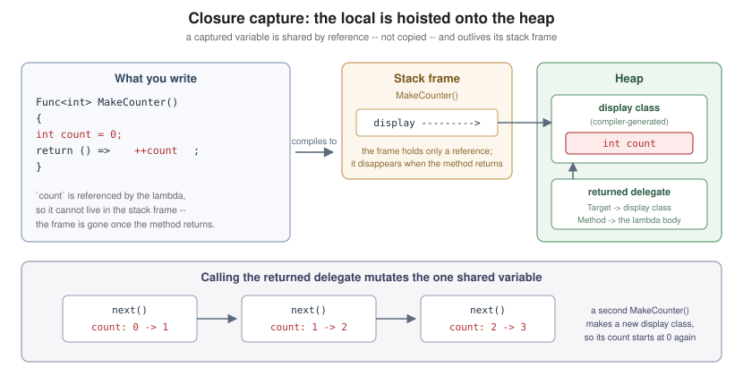

Delegates, Lambdas and Events
|
This content was generated with the assistance of AI and should be verified against the official documentation before being relied on in production. |
A delegate is a type whose values are methods. It is C#'s answer to "pass this behaviour along" — the foundation under LINQ, callbacks, asynchronous continuations and events. Lambdas are the compact syntax for writing a delegate’s body inline; events are a controlled way to publish one to subscribers.
Delegate Types
A delegate declaration defines a signature. Any method matching it can be assigned to a variable of that type:
// The declaration introduces a type, not a method.
public delegate decimal Discount(decimal amount);
public static class DelegateBasics
{
public static decimal TenPercent(decimal amount) => amount * 0.9m;
public static decimal FlatFive(decimal amount) => Math.Max(0m, amount - 5m);
public static void Run()
{
Discount policy = TenPercent; // method group conversion -- no parentheses
Console.WriteLine(policy(100m)); // 90 -- invoked like a method
policy = FlatFive; // any matching method will do
Console.WriteLine(policy.Invoke(100m));// 95 -- Invoke is the explicit form
}
}Delegates are reference types deriving from System.MulticastDelegate. Assigning a method to one is a
method group conversion: the method’s name without an argument list is the "method group", and the compiler
picks the overload matching the delegate’s signature.
Func, Action and Predicate
Declaring a bespoke delegate type is rarely necessary. The BCL ships generic families that cover almost everything:
public static class BuiltInDelegates
{
public static void Run()
{
Func<decimal, decimal> discount = amount => amount * 0.9m; // returns a value
Action<string> log = message => Console.WriteLine(message); // returns void
Predicate<int> isEven = n => n % 2 == 0; // Func<int, bool> by another name
Console.WriteLine(discount(100m));
log("applied");
Console.WriteLine(isEven(4));
Func<int, int, int> add = (a, b) => a + b; // up to 16 parameters
Action noArguments = () => log("nothing to see"); // no parameters, no result
Console.WriteLine(add(2, 3));
noArguments();
}
}Prefer these over custom delegate types unless the name itself carries meaning (Discount documents intent in a
way Func<decimal, decimal> does not) or the signature needs ref/out parameters, which Func/Action
cannot express.
Multicast Delegates and Invocation Lists
Every delegate instance holds an invocation list. + and += append, - and -= remove:
public static class Multicast
{
public static void Run()
{
Action<string> pipeline = m => Console.WriteLine($"console: {m}");
pipeline += m => Console.WriteLine($"audit: {m}");
pipeline("saved"); // both run, in the order they were added
Console.WriteLine(pipeline.GetInvocationList().Length); // 2
// Combining is not mutation: delegates are immutable, += builds a new instance.
Action<string> single = m => Console.WriteLine(m);
Action<string> combined = single + (m => Console.WriteLine(m.ToUpperInvariant()));
Console.WriteLine(ReferenceEquals(single, combined)); // False
}
}Two traps follow from the invocation list:
-
For a delegate with a return value, only the last invocation’s result is returned; the rest are discarded. Multicast is really only meaningful for
void-returning delegates. -
An exception thrown by one subscriber abandons the remaining subscribers. To isolate them, walk
GetInvocationList()yourself and wrap each call.
public static class IsolatedInvocation
{
public static void RaiseSafely(Action<string> handlers, string message)
{
foreach (Action<string> handler in handlers.GetInvocationList().Cast<Action<string>>())
{
try
{
handler(message);
}
catch (Exception ex)
{
Console.WriteLine($"subscriber failed: {ex.Message}");
}
}
}
}Removing a delegate that is not in the list is a silent no-op, and -= compares by target and method — which
is why removing a lambda you did not keep a reference to is impossible (see
Unsubscribing and memory leaks).
Lambda Expressions
A lambda is an inline function. Its body is either an expression or a statement block:
public static class LambdaForms
{
public static void Run()
{
Func<int, int> square = x => x * x; // expression body
Func<int, string> describe = x => // statement body
{
if (x < 0) return "negative";
return x == 0 ? "zero" : "positive";
};
Func<int, int, int> typed = (int a, int b) => a + b; // explicit parameter types
Func<int, int, int> inferred = (a, b) => a + b; // inferred from the target type
Action<int> discardIt = _ => { }; // discard parameter
Console.WriteLine($"{square(4)} {describe(-1)} {typed(1, 2)} {inferred(1, 2)}");
discardIt(0);
}
}Natural Type, Default Parameters and Attributes
Since C# 10 a lambda has a natural type, so var works and the compiler infers Func/Action. Since C# 12 a
lambda parameter may have a default value, and attributes may be applied to lambdas and their parameters:
public static class LambdaNaturalType
{
public static void Run()
{
var increment = (int x) => x + 1; // inferred as Func<int, int>
Console.WriteLine(increment.GetType().Name); // Func`2
// C# 12: default parameter values on lambdas.
var pad = (string s, int width = 10) => s.PadLeft(width);
Console.WriteLine($"[{pad("hi")}] [{pad("hi", 4)}]");
// C# 11: attributes on lambdas and on their parameters.
var parse = [return: NotNullIfNotNull(nameof(text))] (string? text) =>
text is null ? null : text.Trim();
Console.WriteLine(parse(" x ") ?? "<null>");
}
}A lambda without a target type still needs one to be inferable — var f = x => x; is an error, because nothing
says what x is.
static Lambdas
Marking a lambda static (C# 9) forbids it from capturing anything, which both documents intent and guarantees
the compiler can cache a single delegate instance rather than allocating per call:
public static class StaticLambdas
{
public static void Run()
{
int outside = 5;
Func<int, int> pure = static x => x * 2; // cannot see `outside` -- by design
Console.WriteLine(pure(outside));
// Marking this one static would be a compile error: it captures `outside`.
Func<int, int> capturing = x => x * outside;
Console.WriteLine(capturing(3));
}
}Modifiers on Simple Lambda Parameters (C# 14)
Before C# 14, using ref, out, in, ref readonly or scoped on a lambda parameter forced you to spell out
every parameter type. C# 14 lifts that: modifiers may be applied to parameters whose type is still inferred.
public delegate bool TryParseDelegate<T>(string text, out T result);
public static class LambdaModifiers
{
public static void Run()
{
// C# 14: `out result` needs no explicit type -- it is inferred from the delegate.
TryParseDelegate<int> tryParse = (text, out result) => int.TryParse(text, out result);
if (tryParse("42", out int value))
{
Console.WriteLine(value); // 42
}
}
}The one exception is params, which still requires the parameter type to be written out. This is a pure
convenience feature — the generated delegate is identical to the pre-C# 14 explicitly typed form.
Closures and Captured Variables
A lambda that references a variable from the enclosing scope captures it. The capture is by reference to the variable, not by copy of its value: the compiler hoists the variable into a compiler-generated class shared by the lambda and the enclosing method, so both see the same storage and it outlives the stack frame.

public static class Closures
{
public static Func<int> MakeCounter()
{
int count = 0; // hoisted onto the heap because the lambda captures it
return () => ++count; // each call mutates the same storage
}
public static void Run()
{
Func<int> next = MakeCounter();
Console.WriteLine(next()); // 1
Console.WriteLine(next()); // 2
Console.WriteLine(next()); // 3
Func<int> other = MakeCounter();
Console.WriteLine(other()); // 1 -- a separate closure, separate storage
}
}The Loop Variable Capture Rule
The classic surprise is capturing a loop variable. foreach and for behave differently, and foreach's
behaviour changed in C# 5:
public static class LoopCapture
{
public static void Run()
{
var fromForeach = new List<Func<int>>();
foreach (int i in Enumerable.Range(0, 3))
{
fromForeach.Add(() => i); // since C# 5: a fresh `i` per iteration
}
Console.WriteLine(string.Join(",", fromForeach.Select(f => f()))); // 0,1,2
var fromFor = new List<Func<int>>();
for (int i = 0; i < 3; i++)
{
fromFor.Add(() => i); // ONE `i` for the whole loop -- all see 3
}
Console.WriteLine(string.Join(",", fromFor.Select(f => f()))); // 3,3,3
var fixedUp = new List<Func<int>>();
for (int i = 0; i < 3; i++)
{
int copy = i; // a per-iteration local restores the intuition
fixedUp.Add(() => copy);
}
Console.WriteLine(string.Join(",", fixedUp.Select(f => f()))); // 0,1,2
}
}The rule is mechanical: a variable declared inside the loop body is captured per iteration; a for loop’s
control variable is declared once, outside the body, so it is captured once. foreach's iteration variable was
changed to be per-iteration precisely because the old behaviour caused so many bugs.
The Cost of Capturing
Capturing allocates. A non-capturing lambda is cached by the compiler into a single static instance; a capturing
one allocates a display class per activation, and re-allocates a delegate each time it is converted. On a hot
path, prefer a static lambda plus an explicit state argument where the API offers one:
public static class AvoidingCapture
{
public static void Run()
{
var cache = new Dictionary<string, int>();
string key = "answer";
// Captures `key` -- allocates a display class and a delegate on every call.
int captured = cache.TryGetValue(key, out int found) ? found : ComputeFor(key);
// Overloads taking a state argument let the lambda stay static.
int viaState = cache.TryGetValue(key, out int hit)
? hit
: StaticFactory(key, static k => ComputeFor(k));
Console.WriteLine($"{captured} {viaState}");
}
private static int ComputeFor(string key) => key.Length;
private static int StaticFactory(string key, Func<string, int> factory) => factory(key);
}Anonymous Methods (Legacy)
C# 2’s delegate (…) { … } syntax predates lambdas and still compiles. It has one quirk worth recognising in old
code: a parameter list may be omitted entirely when the parameters are unused.
public static class AnonymousMethods
{
public static void Run()
{
Func<int, int> old = delegate (int x) { return x * 2; };
Action<string> ignoringParameters = delegate { Console.WriteLine("something happened"); };
Console.WriteLine(old(21));
ignoringParameters("unused");
}
}Write lambdas in new code; anonymous methods offer nothing lambdas do not.
Delegate Variance
Delegates are variant in the same way generic interfaces are: a delegate accepts a method that is more general in its parameters (contravariance) and more specific in its return type (covariance).
public class Animal { }
public class Dog : Animal { }
public static class DelegateVariance
{
private static void HandleAnimal(Animal a) => Console.WriteLine("handled an animal");
private static Dog CreateDog() => new Dog();
public static void Run()
{
// Contravariance: a method taking Animal can serve where one taking Dog is expected.
Action<Dog> onDog = HandleAnimal;
onDog(new Dog());
// Covariance: a method returning Dog can serve where one returning Animal is expected.
Func<Animal> makeAnimal = CreateDog;
Console.WriteLine(makeAnimal().GetType().Name); // Dog
}
}This works because Action<in T> declares T as contravariant and Func<out TResult> declares its result
covariant. See Generics for the in/out rules in full.
Events
An event is a delegate field with the access rules a publisher actually wants: subscribers may add and remove handlers, but only the declaring type may raise it or clear the list.
public sealed class Downloader
{
// `event` restricts outside code to += and -=.
public event EventHandler<int>? ProgressChanged;
public void Download()
{
for (int percent = 0; percent <= 100; percent += 50)
{
OnProgressChanged(percent);
}
}
// The conventional raiser: protected virtual, named On<EventName>, null-checked.
private void OnProgressChanged(int percent) => ProgressChanged?.Invoke(this, percent);
}
public static class EventConsumer
{
public static void Run()
{
var downloader = new Downloader();
downloader.ProgressChanged += (sender, percent) => Console.WriteLine($"{percent}%");
downloader.Download();
}
}The ?.Invoke(…) pattern matters: an event with no subscribers is null, and between the null check and the
call another thread could unsubscribe. ?. reads the field once into a temporary, which closes that race.
The Standard .NET Event Pattern
The framework design guidelines fix the shape of an event so tooling and readers can rely on it:
-
the handler type is
EventHandlerorEventHandler<TEventArgs>; -
the first parameter is
object? sender, the second the event data; -
event data derives from
EventArgs(or, since .NET Core, is any type at all forEventHandler<T>); -
the raiser is a
protected virtual void OnXxx(…)method so derived classes can intercept; -
the event is named with a verb —
Changed,Closing,Completed.
public sealed class FileFoundEventArgs : EventArgs
{
public FileFoundEventArgs(string path) => Path = path;
public string Path { get; }
public bool Cancel { get; set; } // let a subscriber stop the operation
}
public class FileSearcher
{
public event EventHandler<FileFoundEventArgs>? FileFound;
public void Search(IEnumerable<string> candidates)
{
foreach (string candidate in candidates)
{
var args = new FileFoundEventArgs(candidate);
OnFileFound(args);
if (args.Cancel)
{
break;
}
}
}
protected virtual void OnFileFound(FileFoundEventArgs e) => FileFound?.Invoke(this, e);
}Custom add and remove Accessors
The field-like event syntax is shorthand. Writing the accessors explicitly lets you control storage — useful
when a type has many rarely-subscribed events and a field each would be wasteful:
public sealed class SparseEvents
{
private readonly Dictionary<string, Delegate?> _handlers = new();
private readonly Lock _gate = new(); // System.Threading.Lock, C# 13 / .NET 9
public event EventHandler? Saved
{
add
{
lock (_gate)
{
_handlers["Saved"] = Delegate.Combine(_handlers.GetValueOrDefault("Saved"), value);
}
}
remove
{
lock (_gate)
{
_handlers["Saved"] = Delegate.Remove(_handlers.GetValueOrDefault("Saved"), value);
}
}
}
public void RaiseSaved()
{
Delegate? handler;
lock (_gate)
{
handler = _handlers.GetValueOrDefault("Saved");
}
(handler as EventHandler)?.Invoke(this, EventArgs.Empty);
}
}Note that field-like events are already thread-safe for +=/-= — the compiler generates an interlocked
update. Writing accessors by hand means taking that responsibility on yourself.
Partial Events (C# 14)
C# 14 extends partial members to events (and constructors), so a source generator can declare an event in one
part and implement its accessors in another:
// One file -- typically hand-written -- declares the event.
public partial class Telemetry
{
public partial event EventHandler<string> MessageLogged;
public void Log(string message) => OnMessageLogged(message);
}
// Another file -- typically generated -- supplies the implementation.
public partial class Telemetry
{
private EventHandler<string>? _messageLogged;
public partial event EventHandler<string> MessageLogged
{
add => _messageLogged += value;
remove => _messageLogged -= value;
}
private void OnMessageLogged(string message) => _messageLogged?.Invoke(this, message);
}As with other partial members, the defining declaration carries no body and exactly one implementing declaration must supply the accessors.
Unsubscribing and Memory Leaks
An event holds a strong reference to each subscriber’s target object. A long-lived publisher therefore keeps every subscriber alive until it is unsubscribed — the most common managed memory leak in .NET:
public sealed class Window
{
private readonly Downloader _downloader;
private readonly EventHandler<int> _handler;
public Window(Downloader downloader)
{
_downloader = downloader;
// Keep the delegate in a field so the exact same instance can be removed later.
_handler = (sender, percent) => Console.WriteLine(percent);
_downloader.ProgressChanged += _handler;
}
public void Close() => _downloader.ProgressChanged -= _handler;
}Two rules follow:
-
-=matches on target and method, sox.E -= (s, e) => …removes nothing — the new lambda is a different instance. Store the delegate, or subscribe with a named method. -
Whoever subscribes owns unsubscribing. Tie it to a lifetime you already have —
Dispose, a window’s close, a scope’s end. See Memory Management and Disposal.
Delegates versus Interfaces
Both express "call back into code I do not own". Choose by cardinality and cohesion:
| Use a delegate when | Use an interface when |
|---|---|
There is exactly one operation |
There are several related operations |
The callback is naturally written inline |
The implementation has state or its own identity |
Subscribers come and go at run time (events) |
The implementation is chosen once, by composition or DI |
The signature is the whole contract |
The contract deserves a name, documentation and tests |
IComparer<T> and Comparison<T> are the standard illustration — the same contract in both shapes, and the BCL
offers overloads for each.
See Also
-
LINQ — delegates as the engine behind every query operator.
-
Expression Trees and Dynamic — when a lambda should be inspected rather than executed.
-
Async and Await — continuations as delegates.
-
Generics — the variance rules delegates rely on.
-
Java Reference — for Java developers, delegates cover what functional interfaces and method references do, and events replace the listener-registration pattern.
References
-
Microsoft Learn — The
delegateoperator (anonymous methods). -
Microsoft Learn — What’s new in C# 14 — modifiers on simple lambda parameters, partial events.